malbacR: A Vignette Pertaining to Unfiltered Data
Damon Leach, Kelly Stratton, Lisa Bramer
2024-02-12
malbacR_vignette_expanded_unfiltered.RmdThe R package malbacR is a new package that deals with
batch correction methods of small molecule omics data. It works in
conjunction with pmartR, an R package designed for
preprocessing, filtering, and analyzing multi-omics data (Stratton et al. 2019; Degnan et al. 2023).
This outline demonstrates the functionality and use of the
malbacR package. Within this package, there are four data
sets: pmart_amide,
pmart_amideFilt,pmart_mix, and
pmart_mixFilt. The first two objects contain data
originally found in the package WaveICA2.0 (Deng and Li 2022). The second two objects
contain data originally found in the package crmn (Redestig et al. 2009). The data sets with the
suffix “Filt” are filtered versions of the original data sets. That is,
unlike their non-filtered counterparts, these data objects require no
additional data manipulation for batch correction to successfully run.
For this example, we work with the unfiltered data sets to demonstrate
how pmartR works with in tandem with
malbacR.
Within malbacR there are 12 batch correction
methods:
- Range Scaling (Berg et al. 2006)
- Power Scaling (Berg et al. 2006)
- Pareto Scaling (Berg et al. 2006)
- ComBat (Müller et al. 2016)
- EigenMS (Karpievitch et al. 2014)
- NOMIS (Sysi-Aho et al. 2007)
- RUV-random (De Livera et al. 2015)
- QC-RLSC (Dunn et al. 2011)
- WaveICA2.0 (Deng et al. 2019)
- TIGER (Han et al. 2022)
- SERRF (Fan et al. 2019)
- QC-RFSC (Luan et al. 2018)
First we load in the necessary libraries which is the
malbacR package itself and pmartR (Degnan et al. 2023) which malbacR
works with compatibly. Additionally, ggplot2 is loaded for
some slight graphical manipulations.
Data Set 1: Amide Data
The first data set in malbacR, pmart_amide,
is the Amide data set originally found in the package
WaveICA2.0 (Deng and Li
2022). This metabolomics data set was ran in three batches. In
this random subset of the Amide data, there are 500 molecules and 642
samples. This data set contains information about the samples regarding
batch, group, Quality Control (QC) samples, and injection order. Using
this information, we can run batch correction on the data using the
following methods: range scaling (Berg et al.
2006), power scaling (Berg et al.
2006), pareto scaling (Berg et al.
2006), ComBat (Müller et al. 2016),
EigenMS (Karpievitch et al. 2014), QC-RLSC
(Dunn et al. 2011), TIGER (Han et al. 2022), and WaveICA2.0 (Deng et al. 2019). As there is no e_meta
information for negative controls or internal standards, NOMIS (Sysi-Aho et al. 2007) and RUV-random (De Livera et al. 2015) cannot be run.
Load in the Data
A pmartR friendly version of the Amide data is already
implemented within malbacR. Therefore, we simply need to
load the data.
data(pmart_amide)Before running batch correction, we run some pre-processing steps.
First we specify the group designation of the data with
group as the main_effects and
batch as the batch_id.
Next, we create a version of the data that has been log2 transformed,
as some methods (but not all methods) require the data to be on a log
scale. Additionally, we create a normalized version of the data using a
global median. All of this is done using the functions
group_designation, edata_transform, and
normalize_global respectively within pmartR
(Degnan et al. 2023).
pmart_amide <- group_designation(pmart_amide,main_effects = "group",batch_id = "batch")
pmart_amide_log <- edata_transform(pmart_amide,"log2")
pmart_amide_norm <- normalize_global(pmart_amide_log,subset_fn = "all",norm_fn = "median",
apply_norm = TRUE,backtransform = TRUE)Run Batch Correction Methods
Scaling Methods
To correct for batch effects using range, power, and pareto scaling,
we use the functions bc_range, bc_power, and
bc_pareto respectively. All three of these functions simply
simply take the parameter omicsData which is the S3 data
object that is compatible within pmartR.
These scaling methods are ran using log2 abundance values that have not been normalized.
QC-Based Methods
Some batch correction methods rely on Quality Control (QC) samples
including TIGER, QC-RLSC, QC-RFSC and SERRF. To run TIGER (Technical
variation elImination with ensemble learninG architEctuRe) (Han et al. 2022), we run the function
bc_tiger and use the following parameters:
omicsData, sampletype_cname (a column in
f_data that specifies which sample is QC sample or not),
test_val (the value in sampletype_cname that
specifies a QC sample), injection_cname (the column in
f_data that specifies the injection order), and
group_cname (the column in the f_data that
specifies the groups that are used for statistical analyses).
TIGER requires that there be at least one sample from the QC samples
to have complete data for every molecule and at least one sample from
the non-QC samples to have complete data from every molecule (Han et al. 2022). For this reason, we include a
function, tiger_filter, that finds the combination of a QC
sample and a non-QC sample that has the the fewest number of missing
molecules to determine which molecules need to be removed. Using an
additional function apply_tigerFilt, we apply that filter
and obtain an S3 object that is capable of working within both
pmartR and malbacR. Although this subset of
data is already capable of undergoing TIGER batch correction as there is
at least one QC sample and at least one non-QC sample with no missing
values, we show how these functions would work in general.
TIGER is ran on raw abundance values. After running batch correction, we transform the data to a log2 scale.
tigerFilt <- tiger_filter(pmart_amide,sampletype_cname = "group",test_val = "QC")
pmart_amideFilt <- apply_tigerFilt(tigerFilt,pmart_amide)
amide_tiger_abundance <- bc_tiger(omicsData = pmart_amideFilt,sampletype_cname = "group",
test_val = "QC",injection_cname = "Injection_order",group_cname = "group")
amide_tiger <- edata_transform(omicsData = amide_tiger_abundance, data_scale = "log2")QC-RLSC (Quality Control - Robust Loess Signal Correction) (Dunn et al. 2011) can be ran using
bc_qcrlsc which takes on the parameters
omicsData, block_cname (a column in
f_data that specifies which column contains batch
information), qc_cname (a column in in f_data
that specifies which sample is a QC sample or not), qc_val
(the value in qc_cname that specifies a QC sample), and
order_cname (a column in f_data that specifies
the run order of the samples). Additionally, the user can specify the
missing_thresh (the minimum proportion of observed
biomolecules for each QC samples), the rsd_thresh, and
whether the user wants to backtransform the data or not.
Further, users can specify whether they would like to retain the QC
samples in their final output by specifying keep_qc to be
TRUE or FALSE.
QC-RLSC is ran on log2 abundance values that have not been normalized.
amide_qcrlsc <- bc_qcrlsc(omicsData = pmart_amide_log,block_cname = "batch",
qc_cname = "group", qc_val = "QC", order_cname = "Injection_order",
missing_thresh = 0.5, rsd_thresh = 0.3, backtransform = FALSE,keep_qc = FALSE)The next QC method in malbacR is SERRF (Systematic Error
Removal using Random Forest) (Fan et al.
2019) which uses the function bc_serrf. This
function utilizes the parameters omicsData,
sampletype_cname, test_val, and
group_cname which have the same meanings as those within
bc_tiger.
One thing to note that SERRF is a method that requires complete
observations (Fan et al. 2019). This means
we either have to remove molecules with missing values or impute them
using an Expectation Maximization algorithm. Although there are reasons
to avoid imputation particularly with proteomics data (B.-J. Webb-Robertson et al. 2011), we
acknowledge that there are cases in which imputation is necessary.
Therefore, we include an imputation function that returns
the e_data that has undergone imputation. To then
officially apply this to the pmartR S3 object, the user
runs apply_imputation, similar to the procedure of
tiger_filter and apply_tigerFilt.
It is important to note that while SERRF is ran on raw abundance values, imputation is conducted on log2 data. Therefore, users must impute the data using log2 data. Once imputed, users can return to a raw abundance value to run batch correction. After running batch correction, we log2 transform the data again.
impObj <- imputation(omicsData = pmart_amide_log)
amide_imp_log <- apply_imputation(impObj,pmart_amide_log)
amide_imp_raw <- edata_transform(amide_imp_log,"abundance")
amide_serrf_abundance <- bc_serrf(omicsData = amide_imp_raw,sampletype_cname = "group",test_val = "QC",group_cname = "group")
amide_serrf <- edata_transform(omicsData = amide_serrf_abundance,data_scale = "log2")The final QC method in malbacR is QC-RFSC (Quality
Control - Random Forest Signal Correction) (Luan
et al. 2018) can be ran using bc_qcrfsc which takes
on the parameters. QC-RFSC has the following the arguments
omicsData, qc_cname, qc_val,
keep_qc and Injection_order which has the same
meaning as the arguments from QC-RLSC. Additionally, QC-RFSC requires
group_cname and ntree (the number of trees to
be created when running random forest).
Similar to SERRF, QC-RFSC requires complete observations, but is ran on raw abundance values (Luan et al. 2018). As with SERRF, we log2 transform the data, impute the data, transform back to raw abundance values and then run QC-RFSC. To compare results, it is suggested that users then convert data back to log2 scale after batch correction.
amide_qcrfsc_abundance <- bc_qcrfsc(omicsData = amide_imp_raw,qc_cname = "group",qc_val = "QC",
order_cname = "Injection_order",group_cname = "group",
ntree = 500, keep_qc = FALSE)
amide_qcrfsc <- edata_transform(omicsData = amide_qcrfsc_abundance,data_scale = "log2")Other Methods
There are other methods that do not utilize a scaling approach or use
QC samples. One method is ComBat which relies on an Empirical Bayesian
analysis (Müller et al. 2016). ComBat can
be ran using bc_combat taking on the parameter
omicsData. However, for this function to run, the user must
have normalized the data using normalize_global and added a
batch ID using group_designation within
pmartR. Further, there is an optional parameter
use_groups that defaults to FALSE. If set to
TRUE, ComBat will run using both batch and group
information rather than just batch information.
ComBat is ran on log2 transformed data that has also been normalized.
# combat batch correction
amide_combat <- bc_combat(omicsData = pmart_amide_norm, use_groups = FALSE)EigenMS uses the function bc_eigenMS and takes the
parameter omicsData. While this is the only parameter, it
is also required that the the S3 object has undergone group designation
using the function group_designation in
pmartR. However, only a main_effects for the
group information needs to be addressed and no batch_id is
necessary. This is in contrast with bc_combat which
requires batch_id.
EigenMS is ran on data that has been log2 transformed, but has not been normalized.
amide_eigen <- bc_eigenMS(omicsData = pmart_amide_log)The final method we demonstrate using the “Amide” data is WaveICA
which uses the function bc_waveica. Within this function
users can either run WaveICA or WaveICA2.0 by specifying the parameter
version to be either “WaveICA” or “WaveICA2.0”. The default
is “WaveICA”.
For WaveICA, users need to specify the following parameters:
omicsData, batch_cname (column of
f_data with the batch information), as well as
alpha (a tradeoff value between independence of the samples
and those of the variables in ICA), cutoff_batch (threshold
of variation explained by the batch for independent components),
cutoff_group (threshold of variation explained by the
groups for independent components), and K (the maximal
component that ICA decomposes). The defaults for alpha,
cutoff_injection, K,
cutoff_batch, and cutoff_group are 0, 10,
0.05, and 0.05 respectively.
For WaveICA2.0, users will use the same parameters with the exception
of specifying the injection_cname (column of
f_data with the injection order information) rather than
the batch_cname. Additionally, users will specify the
cutoff_injection (threshold of variation explained by the
injection order for independent components) rather than the
cutoff_batch and cutoff_groups values.
Like SERRF and QC-RFSC, WaveICA and WaveICA2.0 requires both complete observations and raw abundance values (Deng et al. 2019). Therefore, we use the imputed data set that has already been created and follow a similar procedure of log2 transforming the data to impute the data, converting back to raw abundance values to run batch correction. After batch correction, we log2 transform the data back again.
It is noted that WaveICA can yield negative raw abundance values.
When converting to a log2 scale, these values will become NA and may
impact downstream analyses. Users can choose to specify
negative_to_na to be TRUE and all abundance values that are
negative will be returned as NA.
amide_wave_abundance <- bc_waveica(omicsData = amide_imp_raw, batch_cname = "batch",
version = "WaveICA2.0",
injection_cname = "Injection_order",alpha = 0,
cutoff_injection = 0.1, K = 10,
negative_to_na = TRUE)
amide_wave <- edata_transform(omicsData = amide_wave_abundance, data_scale = "log2")Amide: Data Visualization
After obtaining all the different batch corrected data sets, we can
plot the PPCA (B.-J. M. Webb-Robertson et al.
2013) to see if they are successfully returning batch corrected
data. We set the group_designation to use our batch
information as the main_effects so as to color the data by
batch. All of this code is run using functions from pmartR
demonstrating the utility between the two packages. A data set with
batch effects will tend to produce a PPCA with distinct clusters for
each batch. A good batch effect correction method will reduce those
distinct clusters. Using that logic, ComBat, EigenMS, WaveICA2.0, and
SERRF perform the best within this data set.
p1 <- plot(dim_reduction(omicsData = pmart_amide_log),omicsData = pmart_amide,color_by = "batch") + labs(title = "Amide: Unadjusted")
p2 <- plot(dim_reduction(omicsData = amide_range),omicsData = amide_range,color_by = "batch") + labs(title = "Amide: Range")
p3 <- plot(dim_reduction(omicsData = amide_power),omicsData = amide_power,color_by = "batch") + labs(title = "Amide: Power")
p4 <- plot(dim_reduction(omicsData = amide_pareto),omicsData = amide_pareto,color_by = "batch") + labs(title = "Amide: Pareto")
p5 <- plot(dim_reduction(omicsData = amide_tiger),omicsData = amide_tiger,color_by = "batch") + labs(title = "Amide: TIGER")
p6 <- plot(dim_reduction(omicsData = amide_qcrlsc),omicsData = amide_qcrlsc,color_by = "batch") + labs(title = "Amide: QC-RLSC")
p7 <- plot(dim_reduction(omicsData = amide_combat),omicsData = amide_combat,color_by = "batch") + labs(title = "Amide: ComBat")
p8 <- plot(dim_reduction(omicsData = amide_wave),omicsData = amide_wave,color_by = "batch") + labs(title = "Amide: WaveICA2.0")
p9 <- plot(dim_reduction(omicsData = amide_serrf),omicsData = amide_serrf,color_by = "batch") + labs(title = "Amide: SERRF")
p10 <- plot(dim_reduction(omicsData = amide_qcrfsc),omicsData = amide_qcrfsc,color_by = "batch") + labs(title = "Amide: QC-RFSC")
p11 <- plot(dim_reduction(omicsData = amide_eigen),omicsData = amide_eigen,color_by = "batch") + labs(title = "Amide: EigenMS")
p1;p2;p3;p4;p5;p6;p7;p8;p9;p10;p11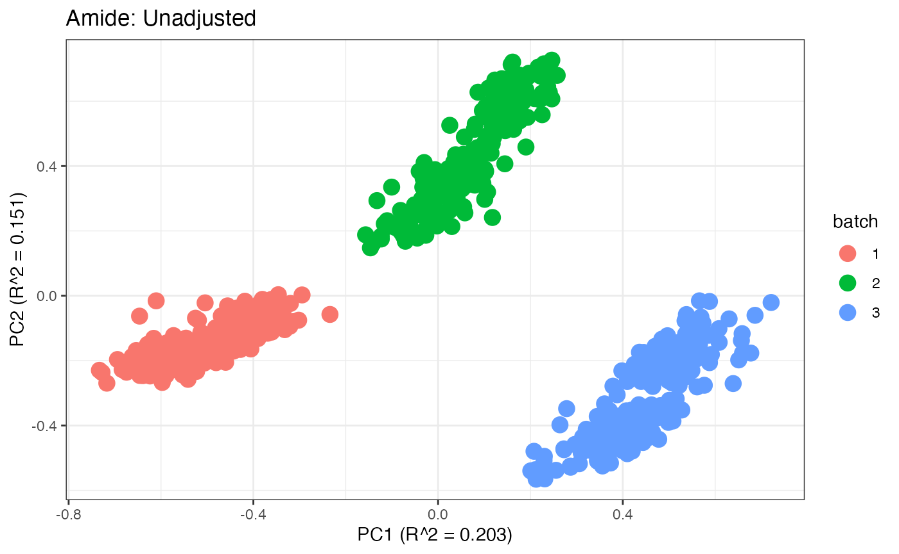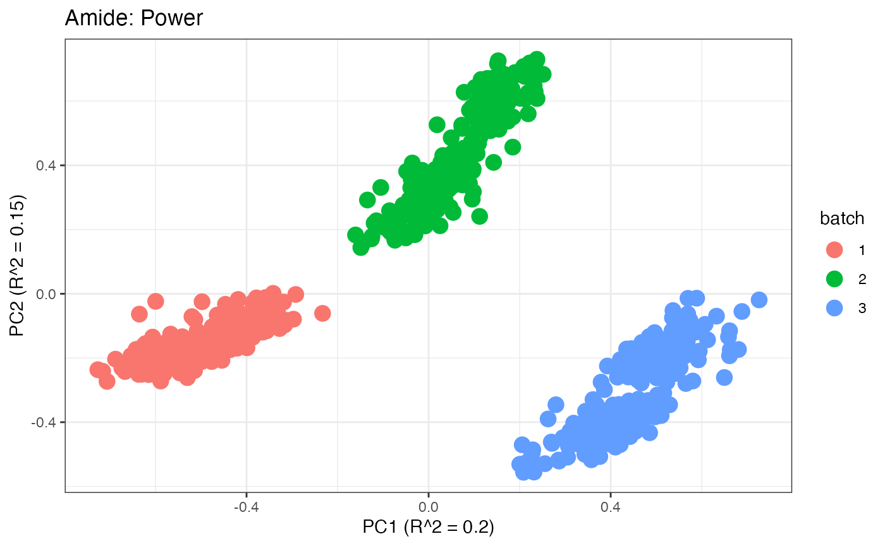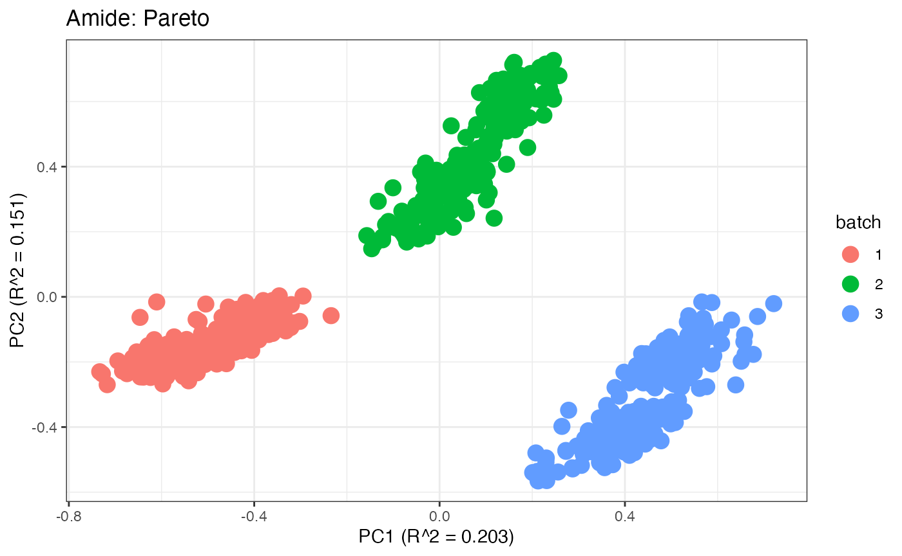 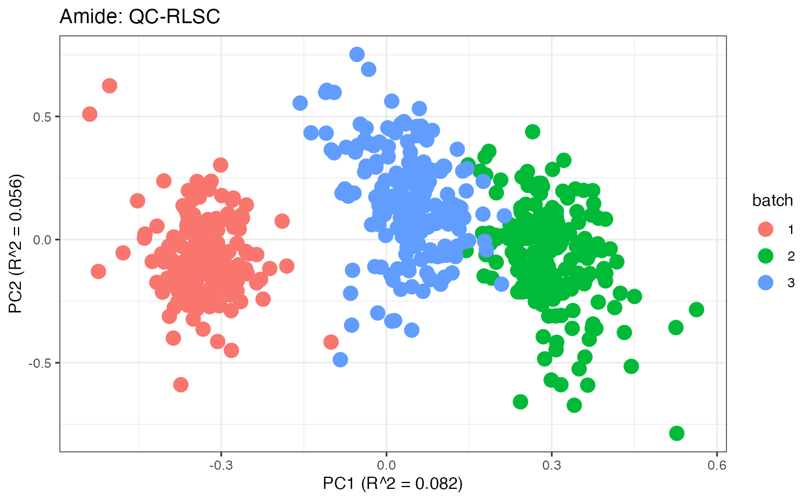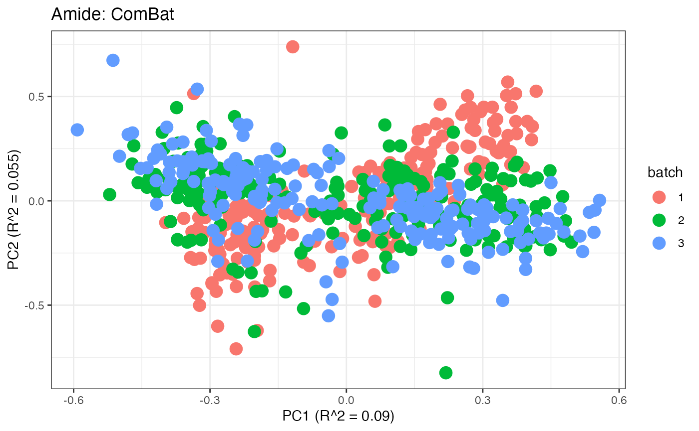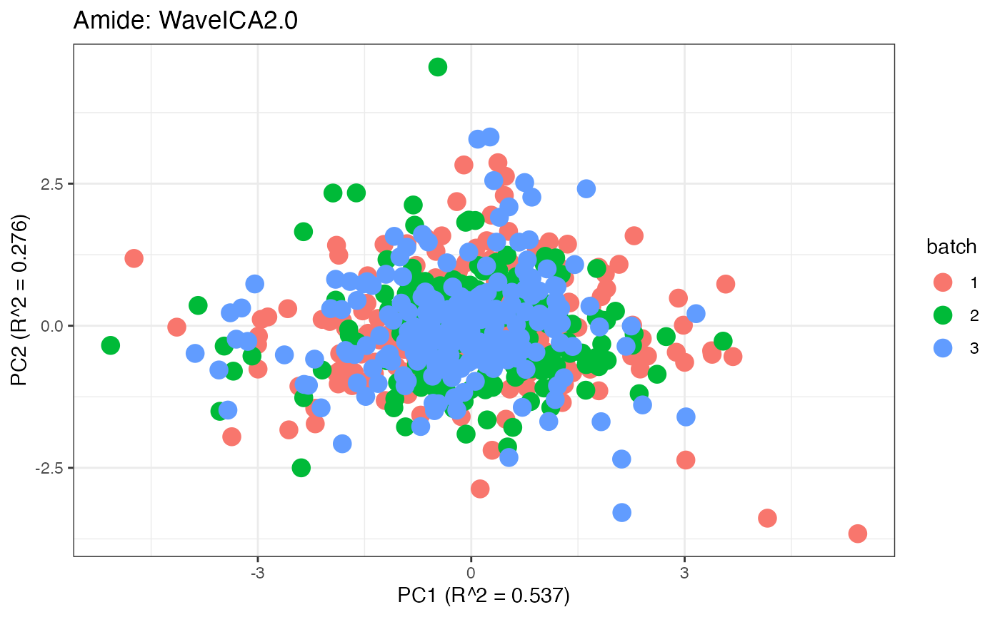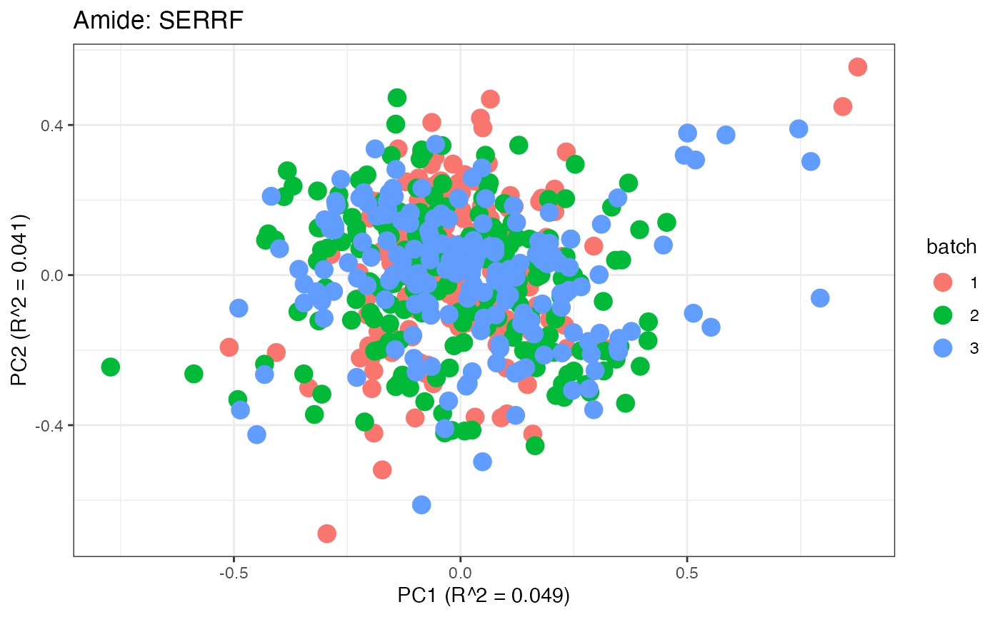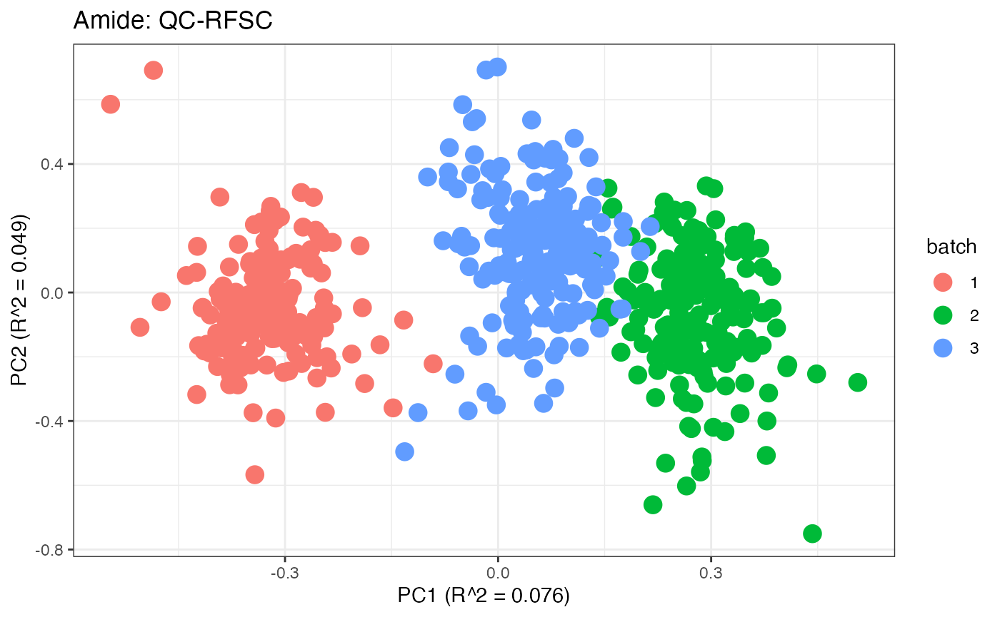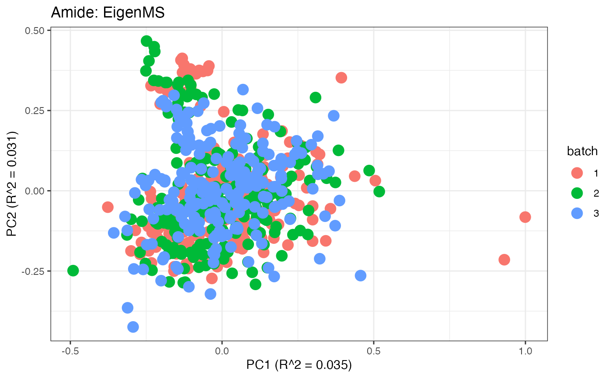
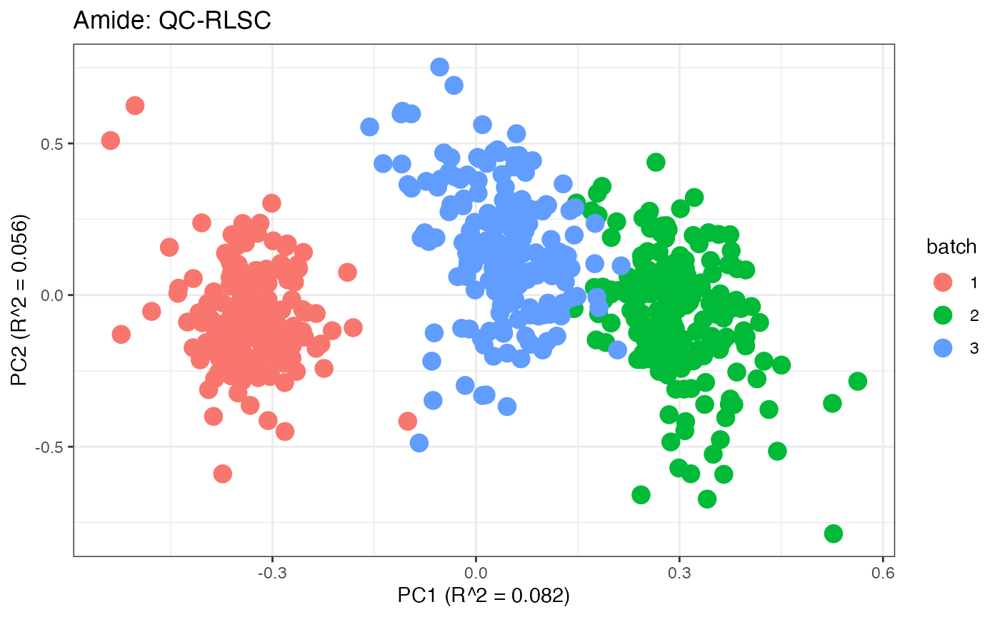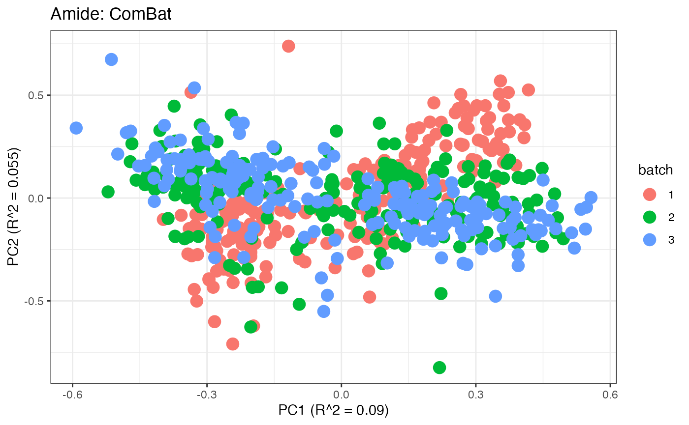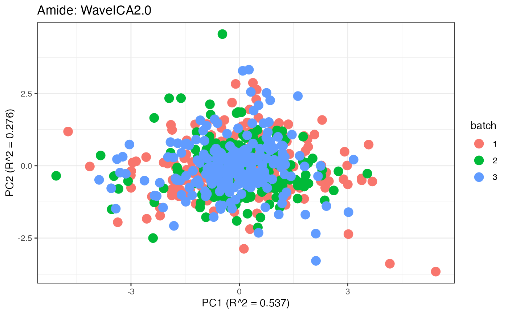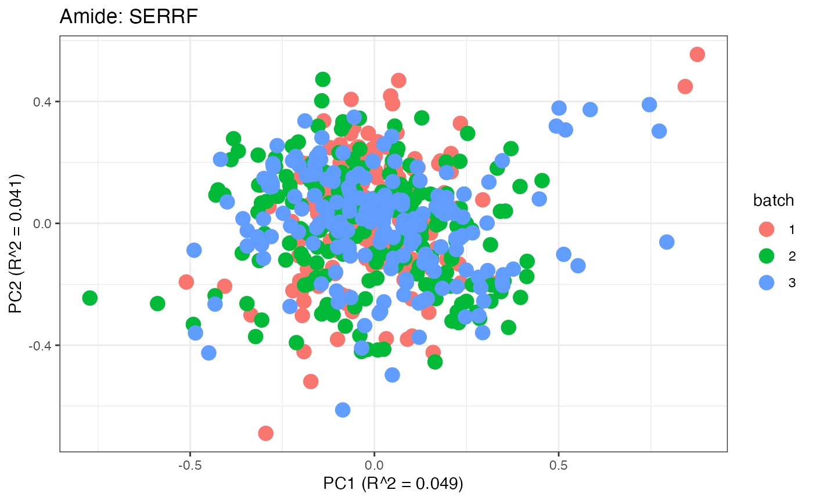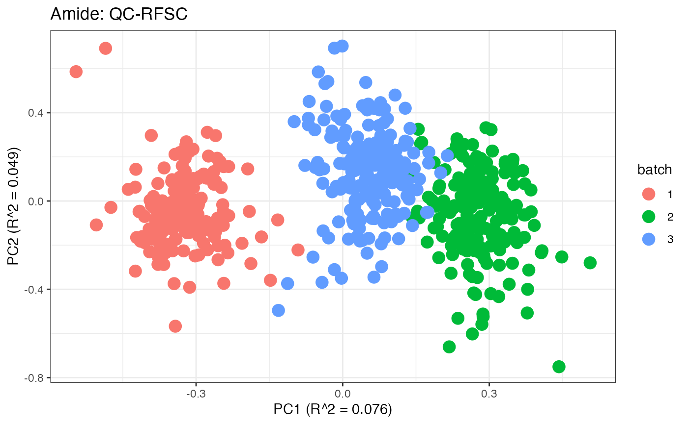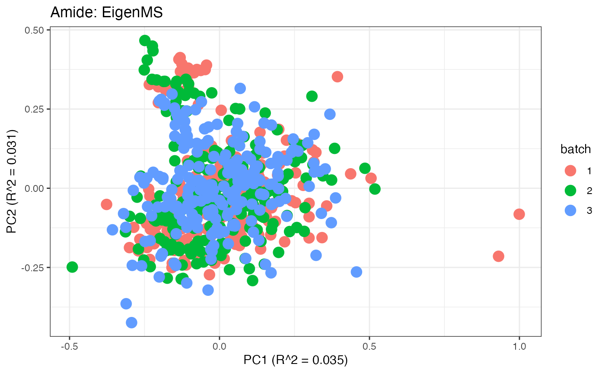
Data Set 2: Mix Data
We now proceed to the second data set. As not all experiments are
designed in the same manner, some batch correction methods may not apply
to every data set. pmart_mix is based off of the data set
mix from the crmn package (Redestig et al. 2009). This metabolomics data
set was ran in three batches. There are 46 molecules and 42 samples.
This data set contains sample information regarding batch as well as
molecule information regarding internal standards/negative controls.
Load in the Data
A pmartR friendly version of the mix data
is already implemented within malbacR. Therefore, we simply
need to load the data.
data(pmart_mix)Before running batch correction, we set the group designation. As
there is no group information, we specify the batch number
BatchNum as both the main_effects effect and
the batch_id as a workaround. Additionally, we create a
log2 transformed version of the data as well as a normalized version of
the data using global median centering. This data set has no missing
values so imputation will not be necessary for any method.
pmart_mix <- group_designation(pmart_mix,main_effects = "BatchNum",batch_id = "BatchNum")
pmart_mix_log <- edata_transform(pmart_mix,"log2")
pmart_mix_norm <- normalize_global(pmart_mix_log,subset_fn = "all",norm_fn = "median",
apply_norm = TRUE,backtransform = TRUE)Some methods that have already been demonstrated can be used with
this data set as well such as range scaling, power scaling, pareto
scaling, and ComBat. There are no QC samples in this data so QC-RLSC,
QC-RFSC, TIGER, and SERRF cannot be ran. In addition, there is no
injection order information which means that there is insufficient data
to run WaveICA2.0. Further there is also no group information (as
BatchNum was placed as main_effects only as a
placeholder) and thus EigenMS should not be ran. Additionally, ComBat
should be only be ran with batch information and not with group
information.
Internal Standards/Negative Controls Methods
The two main batch correction methods for this data set are
RUV-random and NOMIS. As the data is already complete, there is no need
to run imputation. However it is important to note that these methods
require complete observations Sysi-Aho et al.
(2007). The first method that we use with the “mix” data set is
RUV-random which utilizes the function bc_ruvRandom and
takes the parameters omicsData, nc_cname
(column in e_meta which has information on negative
controls - here we use the tag for internal standards as negative
control), nc_val (which is the value within
nc_cname that is the negative control value), and
k (the number of factors of unwanted variation)
RUV-random is ran on log2 transformed data that has not been normalized.
mix_ruv <- bc_ruvRandom(omicsData = pmart_mix_log, nc_cname = "tag",nc_val = "IS", k = 3)## Warning: Using one column matrices in `filter()` was deprecated in dplyr 1.1.0.
## ℹ Please use one dimensional logical vectors instead.
## ℹ The deprecated feature was likely used in the malbacR package.
## Please report the issue to the authors.
## This warning is displayed once every 8 hours.
## Call `lifecycle::last_lifecycle_warnings()` to see where this warning was
## generated.The other method that uses information found in e_meta
is NOMIS which uses the function bc_nomis and takes the
parameters omicsData, is_cname (column in
e_meta which has the information on internal standards),
is_val (the value within is_cname that is the
value for internal standards) and num_pc (number of
principal components for NOMIS to consider).
NOMIS is ran on raw abundance values. As there no missing values, data does not need to be imputed. However, if there were missing values, a similar procedure as to what was done with SERRF with the amide data, would be required.
mix_nomis_abundance <- bc_nomis(omicsData = pmart_mix, is_cname = "tag", is_val = "IS", num_pc = 2)
mix_nomis <- edata_transform(omicsData = mix_nomis_abundance, data_scale = "log2")Other Methods
We also run applicable methods that were used in the “Amide” data set such as range scaling, pareto scaling, power scaling, and ComBat. Additionally, WaveICA can be ran (just not WaveICA2.0) as it relies on batch information rather than injection order.
mix_combat <- bc_combat(omicsData = pmart_mix_norm)
mix_range <- bc_range(omicsData = pmart_mix_log)
mix_pareto <- bc_pareto(omicsData = pmart_mix_log)
mix_power <- bc_power(omicsData = pmart_mix_log)
mix_waveica_abundance <- bc_waveica(omicsData = pmart_mix,batch_cname = "BatchNum",
version = "WaveICA",cutoff_batch = 0.05, cutoff_group = 0.05,
negative_to_na = TRUE)## ######Decomposition 1 ########
## ######Decomposition 2 ########
## ######Decomposition 3 ########
## ######Decomposition 4 ########
## ######Decomposition 5 ########
## ######Decomposition 6 ########
## ######Decomposition 7 ########
## ######Decomposition 8 ########
## ######Decomposition 9 ########
## ######Decomposition 10 ########
## ######Decomposition 11 ########
## ######Decomposition 12 ########
## ######Decomposition 13 ########
## ######Decomposition 14 ########
## ######Decomposition 15 ########
## ######Decomposition 16 ########
## ######Decomposition 17 ########
## ######Decomposition 18 ########
## ######Decomposition 19 ########
## ######Decomposition 20 ########
## ######Decomposition 21 ########
## ######Decomposition 22 ########
## ######Decomposition 23 ########
## ######Decomposition 24 ########
## ######Decomposition 25 ########
## ######Decomposition 26 ########
## ######Decomposition 27 ########
## ######Decomposition 28 ########
## ######Decomposition 29 ########
## ######Decomposition 30 ########
## ######Decomposition 31 ########
## ######Decomposition 32 ########
## ######Decomposition 33 ########
## ######Decomposition 34 ########
## ######Decomposition 35 ########
## ######Decomposition 36 ########
## ######Decomposition 37 ########
## ######Decomposition 38 ########
## ######Decomposition 39 ########
## ######Decomposition 40 ########
## ######Decomposition 41 ########
## ######Decomposition 42 ########
## ######Decomposition 43 ########
## ######Decomposition 44 ########
## ######Decomposition 45 ########
## ######Decomposition 46 ########
## ######### ICA 1 #############
## [1] "Removing 2 components with P value less than 0.05"
## ######### ICA 2 #############
## [1] "Removing 20 components with P value less than 0.05"
## ######### ICA 3 #############
## [1] "Removing 17 components with P value less than 0.05"
## ######### ICA 4 #############
## [1] "Removing 1 components with P value less than 0.05"
## ######### ICA 5 #############
## [1] "Removing 13 components with P value less than 0.05"
## ######### ICA 6 #############
## [1] "Removing 12 components with P value less than 0.05"
## ######Reconstruction 1 ########
## ######Reconstruction 2 ########
## ######Reconstruction 3 ########
## ######Reconstruction 4 ########
## ######Reconstruction 5 ########
## ######Reconstruction 6 ########
## ######Reconstruction 7 ########
## ######Reconstruction 8 ########
## ######Reconstruction 9 ########
## ######Reconstruction 10 ########
## ######Reconstruction 11 ########
## ######Reconstruction 12 ########
## ######Reconstruction 13 ########
## ######Reconstruction 14 ########
## ######Reconstruction 15 ########
## ######Reconstruction 16 ########
## ######Reconstruction 17 ########
## ######Reconstruction 18 ########
## ######Reconstruction 19 ########
## ######Reconstruction 20 ########
## ######Reconstruction 21 ########
## ######Reconstruction 22 ########
## ######Reconstruction 23 ########
## ######Reconstruction 24 ########
## ######Reconstruction 25 ########
## ######Reconstruction 26 ########
## ######Reconstruction 27 ########
## ######Reconstruction 28 ########
## ######Reconstruction 29 ########
## ######Reconstruction 30 ########
## ######Reconstruction 31 ########
## ######Reconstruction 32 ########
## ######Reconstruction 33 ########
## ######Reconstruction 34 ########
## ######Reconstruction 35 ########
## ######Reconstruction 36 ########
## ######Reconstruction 37 ########
## ######Reconstruction 38 ########
## ######Reconstruction 39 ########
## ######Reconstruction 40 ########
## ######Reconstruction 41 ########
## ######Reconstruction 42 ########
## ######Reconstruction 43 ########
## ######Reconstruction 44 ########
## ######Reconstruction 45 ########
## ######Reconstruction 46 ########## Warning in Ops.factor(left, right): '<' not meaningful for factors
mix_waveica <- edata_transform(omicsData = mix_waveica_abundance, data_scale = "log2")Mix: Data Visualization
Similar to the previous data set, we can compare the PPCA plots between the unadjusted and adjusted data sets. Using the same qualitative logic as with the “Amide” data set, it appears that NOMIS, ComBat, and WaveICA performs well based on the PPCA clustering.
p1 <- plot(dim_reduction(omicsData = pmart_mix_log),omicsData = pmart_mixFilt,color_by = "BatchNum") + labs(title = "Mix: Unadjusted")
p2 <- plot(dim_reduction(omicsData = mix_ruv),omicsData = mix_ruv,color_by = "BatchNum") + labs(title = "Mix: ruv-Random")
p3 <- plot(dim_reduction(omicsData = mix_nomis),omicsData = mix_nomis,color_by = "BatchNum") + labs(title = "Mix: NOMIS")
p4 <- plot(dim_reduction(omicsData = mix_combat),omicsData = mix_combat,color_by = "BatchNum") + labs(title = "Mix: ComBat")
p5 <- plot(dim_reduction(omicsData = mix_range),omicsData = mix_range,color_by = "BatchNum") + labs(title = "Mix: Range")
p6 <- plot(dim_reduction(omicsData = mix_power),omicsData = mix_power,color_by = "BatchNum") + labs(title = "Mix: Power")
p7 <- plot(dim_reduction(omicsData = mix_pareto),omicsData = mix_pareto,color_by = "BatchNum") + labs(title = "Mix: Pareto")
p8 <- plot(dim_reduction(omicsData = mix_waveica),omicsData = mix_pareto,color_by = "BatchNum") + labs(title = "Mix: WaveICA")
p1;p2;p3;p4;p5;p6;p7;p8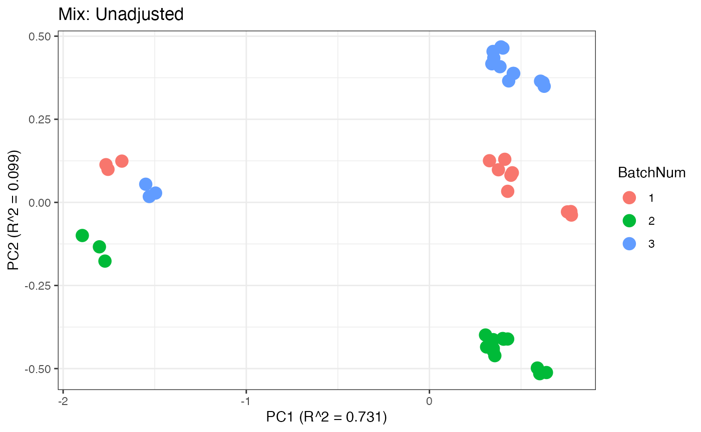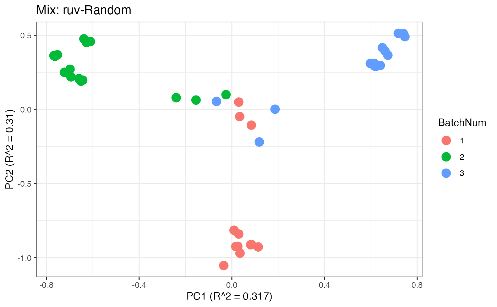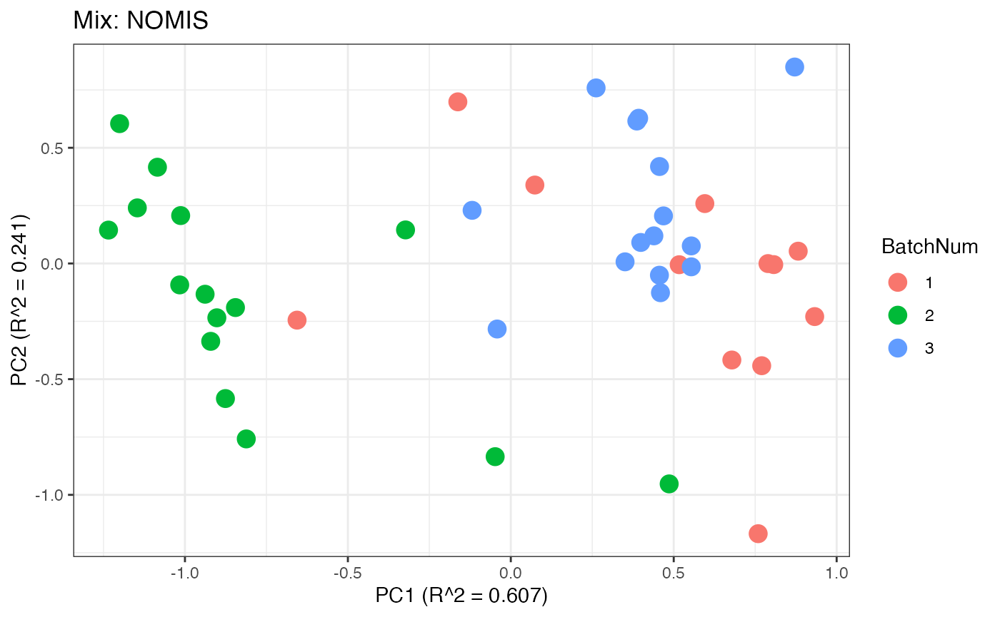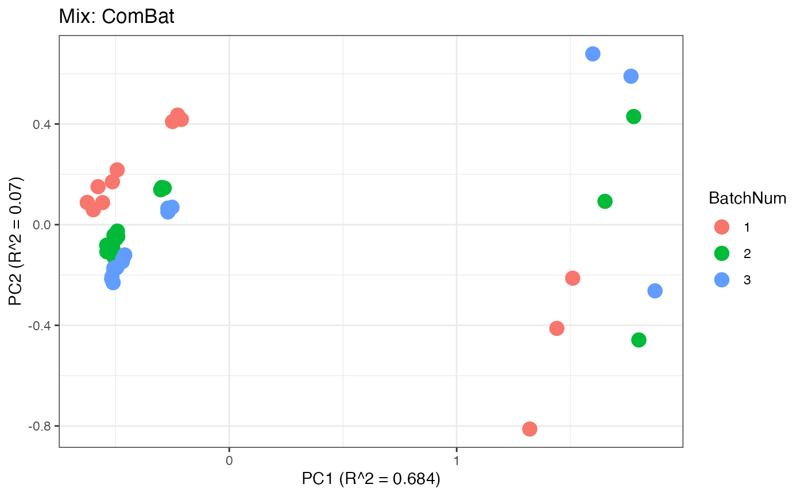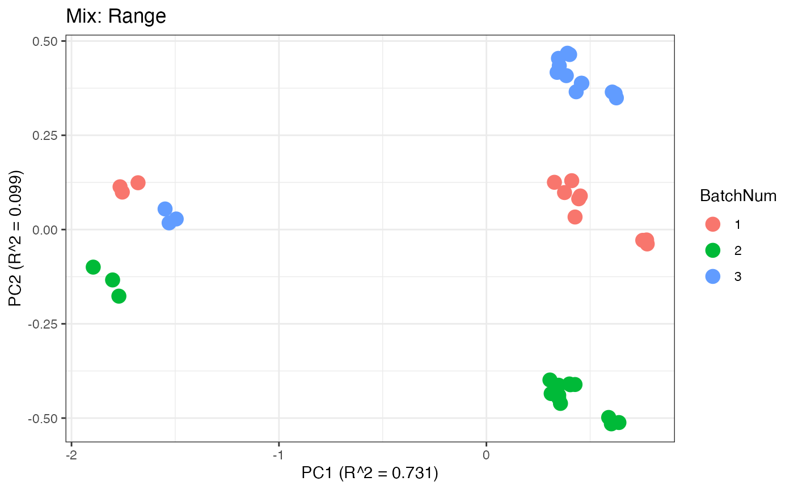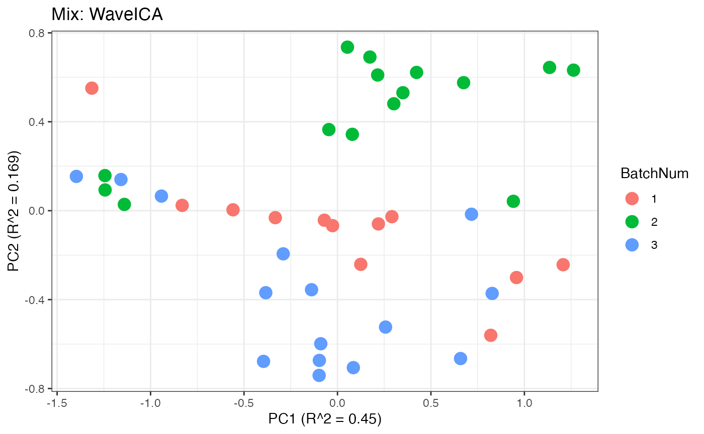